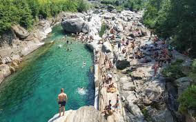
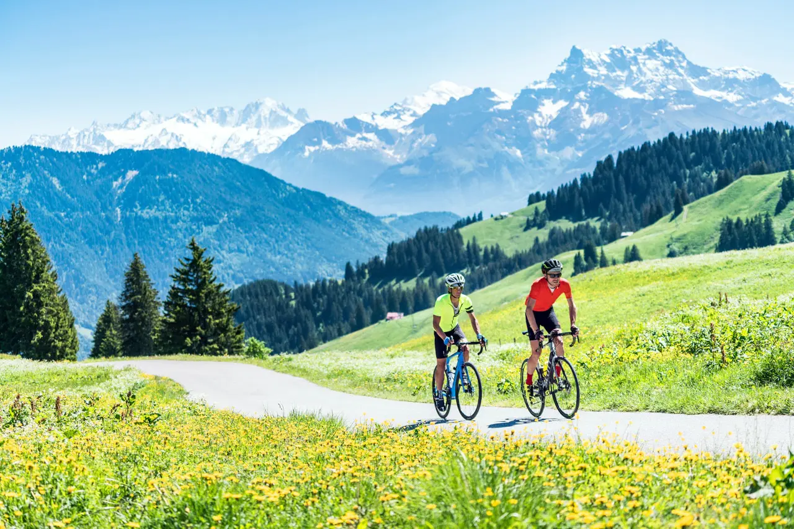
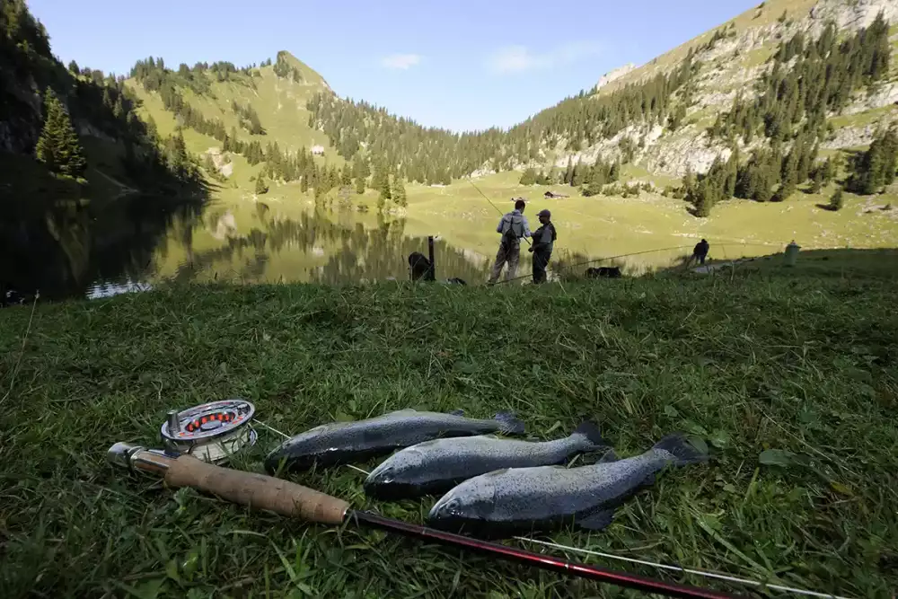

Switzerland has over 1,500 lakes. Fed by glaciers and Alpine rivers, these lakes are remarkably clean and offer spectacular scenery year-round. Many are suitable for swimming, boating, and cycling around their shores, making them essential to any Swiss holiday.
Major Lakes
Lake Geneva (Lac Léman)
The largest lake in Switzerland (and in Western Europe), shared with France. Geneva and Lausanne sit on its shores. The lake is famous for its turquoise colour, the Jet d'Eau fountain, vineyards along its banks (UNESCO Heritage Lavaux wine region), and elegant boat trips. The Château de Chillon near Montreux is a must-see medieval castle right on the waterfront.
Lake Lucerne (Vierwaldstättersee)
Often considered the most beautiful lake in Switzerland, Lake Lucerne's irregular shape winds through mountain valleys with dramatic backdrops of Pilatus, Rigi, and the Titlis. Steamship cruises depart from Lucerne city, and the lakeside towns of Weggis, Vitznau, and Brunnen are idyllic stops.
Lake Zurich (Zürichsee)
Stretching 40 km south from the city, Lake Zurich is a leisure hub for Zurich residents. Paddle through the city in summer, swim at the city's famous Badi (lake baths), or take a lake cruise. The shores are lined with charming towns like Rapperswil, known as the "City of Roses."
Lake Constance (Bodensee)
Shared between Switzerland, Germany, and Austria, this is one of Central Europe's largest lakes. The Swiss shore includes the historic town of Konstanz and the beautiful island monastery of Reichenau. The medieval town of Stein am Rhein is just downstream.
Lake Thun & Lake Brienz
Twin lakes in the Bernese Oberland flanking Interlaken. Lake Thun has the beautiful Thun Castle and excellent paddle steamer services. Lake Brienz is famous for its vivid turquoise colour and the stunning Giessbach waterfall cascading directly into it.
Lake Activities

Boat Cruises
Paddle steamers and modern ferries cross most Swiss lakes. Many routes are covered by the Swiss Travel Pass.

Swimming
Switzerland's lakes are exceptionally clean. Public bathing areas (Badis) are found on almost every lake.

Cycling
Well-marked cycle paths run around most major lakes. E-bike rental is available in most lakeside towns.

Fishing
Swiss lakes are rich with perch, trout, and pike. A local fishing permit is required.